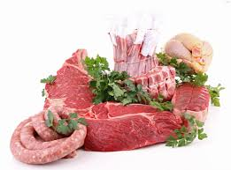

Посолка мяса, сала и других продуктов – один из самых распространенных способов их сохранения в условиях положительных температур. Посолка является также одной из технологических операций при изготовлении окороков, ветчины, копчений и др. Консервирующее действие соли заключается в том, что ее наличие приводит к обезвоживанию присутствующих в продукте микроорганизмов. Учтите, что сами микроорганизмы, развитие которых задерживается солью, не уничтожаются. Поэтому посолка не может служить средством обеззараживания мяса. Мясо, предназначенное для посола, должно быть только от здоровых животных, свежее и доброкачественное.
Оптимальная температура посола 2–4 °C. При более высокой температуре одновременно с посолкой могут происходить процессы, вызывающие порчу мяса. При температурах ниже оптимальной мясо и мясопродукты просаливаются неравномерно, медленно и недостаточно. При посолке мясо подвергается воздействию ферментов самой ткани. В результате, просаливаясь, мясо приобретает более нежную, сочную консистенцию, приятный вкус и запах, ветчинный аромат.
При посолке в рассол экстрагируются растворимые части мяса. Поэтому получаемая солонина будет качественнее и вкуснее, если рассол используется для посола неоднократно. Ведь тогда в рассол из мяса уйдет меньше растворимых компонентов, придающих соленому мясу специфический вкус. В домашних условиях мясо и мясные продукты солят в простом и сложном рассолах. При простом посоле используется только соль. Такой посол применяют для консервирования жирных мясопродуктов, в том числе шпика (сала). В сложный рассол кроме соли добавляют аскорбиновую кислоту или ее соли, сахар и другие компоненты – преимущественно пряности. Поваренная соль изменяет естественную окраску мяса. Следовательно, для придания солонине естественного розового цвета применяют селитру и некоторые другие соли азотной, а также азотистой кислоты. В настоящее время в промышленности селитру стараются не использовать, так как продукты ее разложения (нитриты и нитраты) считаются ядовитыми. Однако в домашнем хозяйстве селитру еще применяют. Поэтому приводим состав посолочной смеси с селитрой с той целью, чтобы указать предельно допустимую дозу ее в рассоле. Лучше же ее не применять совсем!
Итак, в рассол, состоящий из 10 л воды, 1,6 кг соли, 100 г сахара, положить можно не более 0,05 г селитры. Не забудьте добавить в рассол черный и душистый перец, лавровый лист, тмин, анис, кардамон, кориандр, чеснок и др. Воду для рассола лучше прокипятить, а сам рассол профильтровать. При очень хорошей, чистой, мягкой, без посторонних запахов и привкуса водопроводной или артезианской воде ее не кипятят. Профильтровать же рассол никогда не мешает, так как в соли иногда попадаются нерастворимые включения (камешки, песок, порода). Мясо и мясопродукты обрабатывают тремя способами: сухим (сухой солью или соленой гущей), мокрым (в рассоле) или смешанным.
Посол применяют в двух целях:
– чтобы сохранить мясо (говядину, птицу, дичь) в течение длительного времени при отсутствии других возможностей сохранения; таково назначение посола при изготовлении солонины, рулетов, шпика и т. п.;
– как вспомогательное значение, необходимое для проведения последующих технологических приемов обработки – приготовления колбасных изделий, различных видов копченостей.
Заготовка солонины и других соленых изделий из мяса. К приготовлению солонины из свежего мяса следует прибегать лишь в крайних случаях, когда нет иных возможностей для сохранения его в натуральном состоянии, например путем хранения в замороженном виде. Если замороженное мясо практически не изменяет своих вкусовых и питательных свойств в процессе хранения, то при посоле теряется вместе с соком часть (правда, небольшая) белковых и экстрактивных веществ, мясо становится сухим и жестковатым. Но с другой стороны, посол мяса является одним из очень простых, доступных и надежных в домашних условиях способов сохранения мяса в течение длительного времени. Кроме того, при наличии в хозяйстве хранилища со льдом или, погреба можно свести до минимума нежелательные изменения в качестве мяса путем использования более слабой концентрации соли в посолочном рассоле и добавления пряностей. Чтобы обеспечить правильный посол и получить доброкачественные соленые продукты, хорошо сохраняющиеся длительное время, необходимо придерживаться следующей техники посола.
Существуют три вида посола: сухой – натирка мяса посолочной смесью, мокрый – погружение продукта в рассол, смешанный – натирка мяса солью, выдерживание в таком виде некоторое время и последующая заливка рассолом.
Независимо от вида применяемого посола важно следить за тем, чтобы мясо равномерно просаливалось во всех его частях. С этой целью необходимо тщательно подготовить мясо перед посолом: правильно надрубить кости при изготовлении солонины, на костях тщательно обработать «карманы» (надрезы в мышечной ткани мяса) посолочной смесью и т. д.
Равномерное просаливание продукта обеспечивается также своевременным и периодическим перекладыванием отдельных кусков мяса в процессе посола (верхние – вниз, нижние – вверх), правильным положением изделий со шкуркой в посолочной таре (шкуркой вниз) и соблюдением других деталей техники посола, указанных ниже.
Посолочные ингредиенты (смеси). Для посола употребляют поваренную соль, селитру (калиевую или натриевую), сахар, а также по желанию для придания особого аромата и вкуса соленым изделиям различные пряности – лавровый лист, перец душистый, гвоздику и т. д. Для посола нельзя применять загрязненную посторонними примесями соль, а также техническую соль; наиболее пригодна пищевая столовая соль. Помол соли имеет значение только при сухом посоле, для которого больше всего подходит соль среднего помола. Слишком крупную соль трудно равномерно распределить и втереть в продукт, очень мелкая соль может образовать корку на продукте, плохо растворяющуюся в процессе посола, что ведет к неравномерному просаливанию мяса и может вызвать порчу продукта.
Рассол можно готовить из пищевой соли любого посола. Селитру применяют с целью придания мясу и изделиям из него свойственного мясным продуктам розоватого или красноватого цвета. Кроме того, селитра усиливает консервирующее действие соли. Можно использовать как калиевую, так и натриевую селитру, но в разных количествах. Например, если калиевой селитры требуется 10 г, то натриевой селитры берут несколько меньше – 8,5 г. Селитра должна быть химически чистой, сухой, без посторонних запахов. Техническая селитра, употребляемая в качестве удобрений, для посола непригодна.
Важно, чтобы взятое для посола количество соли и селитры соответствовало определенным нормам, указанным в рецептурах тех или иных изделий. Чрезмерный избыток соли ухудшает и вкус и консистенцию продукта; точно так же вреден и избыток селитры. При недостатке соли продукт может испортиться, а при недостатке селитры – слабо окраситься. Применение селитры желательно, но не обязательно, так как на вкусовые качества посоленного мяса она влияния не оказывает.
Обычно в состав посолочной смеси или рассола вводят небольшое количество сахара. Сахар нужен для лучшего прокрашивания мяса и придания более приятного вкуса соленым продуктам.
Для приготовления рассола во всех случаях используют только кипяченую воду. Готовый рассол фильтруют и обязательно охлаждают до самой низкой температуры, возможность в домашних условиях. Вообще следует помнить, что температурный фактор при посоле мяса является решающим для получения качественной продукции. Поэтому для заготовки солонины надо брать только хорошо охлажденное мясо, холодный рассол, а посол и хранение проводить при температуре, не превышающей 4–6 °C.
Тара. Лучшая тара для посола мяса – дубовые и буковые бочки. Вполне пригодны и хорошо изготовленные осиновые бочки, а также бочки из платана и граба. Основные требования к бочкам – прочность, чистота и водонепроницаемость.
Для приготовления солонины можно использовать как новую тару, так и бывшую в употреблении, за исключением бочек из-под керосина, красок, соленой рыбы и других сильно пахнущих веществ.
Новые бочки, а также бочки из-под овощных маринадов, моченых фруктов и других продуктов подготавливают следующим образом. Вначале очищают внутренность бочек щеткой или метлой, затем ее дважды моют крутым кипятком и наполняют водой для отмачивания. Бочки из-под квашеной капусты, соленых огурцов необходимо перед употреблением тщательно вымыть, ошпарить крутым кипятком, а еще лучше сильным паром, проветрить и отмочить. Чтобы проверить бочку на прочность, в нее наливают ведро кипятка, быстро закрывают отверстие в крышке пробкой и сильно встряхивают. Повреждения или щели обнаруживаются по выходящему в этих местах пару.
Приготовление солониныСолонину, предназначенную для длительного хранения, готовят из говяжьего мяса. Свиное мясо лучше сохранять в виде копченых окороков, кореек и грудинки, которые перед копчением также солят. Из говяжьего мяса можно приготовить три вида солонины: на костях, мякотную и деликатесную. Отметим еще раз, что консервирование мяса солью требует точного и правильного соблюдения температурного режима как при посоле, так и в процессе последующего хранения. Если условия обработки и хранения будут нарушены, посоленное мясо может испортиться.
Перед употреблением солонины необходимо проверить ее качество. Доброкачественная солонина должна иметь на разрезе розоватый или светло-красный цвет при слабом посоле и темно-красный – при крепком посоле. Поверхность такой солонины чистая, без плесени и слизи, запах не кислый и не гнилостный, рассол красный, прозрачный, без пены; мясо плотное. Признаки недоброкачественной солонины: рассол мутный, с плесенью, имеет гнилостный запах; мясо мягкое, дряблое, серого или коричневого цвета, покрыто плесенью, издает неприятный кислый запах. Солонина с указанными признаками в пищу непригодна.
Подготовка солонины к употреблению в пищуВвиду того, что в солонине содержится много соли (от 6 до 12 %), перед употреблением в пишу ее вымачивают. Куски солонины хорошо промывают, зачищают, затем заливают холодной водой. Толстые куски разрезают перед вымачиванием на 2–4 части. На 5 кг солонины берут ведро воды. Меняя воду несколько раз, удается снизить содержание соли в солонине до 2 %. Деликатесную солонину вымачивают меньшее время, чем обычную. Мелкие куски солонины (50–60 г) можно не вымачивать, а варить в пятикратном объеме воды. Вымоченную солонину заливают холодной водой и варят до готовности. Деликатесную солонину можно вначале подкоптить в течение нескольких часов, что улучшает ее вкусовые качества, а затем сварить.
Приготовление мякотной солониныНа приготовление солонины используют охлажденное (не ранее 1–2 суток после убоя) говяжье мясо, освобожденное от костей. При удалении костей обращают внимание на то, чтобы выделить из отрубов более крупные куски мяса и сохранить их целыми, стараясь делать меньше глубинных порезов ножом и «разлохмачивания» поверхности мяса. Удалять кости надо быстро.
В домашних условиях лучше солить мясо комбинированным способом. Для этого подготовленное мясо вначале тщательно натирают посолочной смесью, которая готовится путем смешивания поваренной соли с селитрой из расчета 1 кг соли на 10 г калиевой селитры (или 8,5 г натриевой селитры). Селитру лучше брать мелкокристаллическую. Кусочки слежавшейся селитры перед смешиванием с солью следует хорошо измельчить в ступке. Расход посолочной смеси должен составлять 1/10 веса мяса. Небольшим количеством подготовленной посолочной смеси посыпают дно тары, а остальное количество используют для натирки кусков мяса и пересыпания их при укладке в бочку. Куски мяса следует натирать как можно тщательнее, обращая внимание на зарезы и «карманы», куда обязательно вносят посолочную смесь. В очень толстых кусках мяса делают надрезы. Натертые куски мяса плотно укладывают рядами подкожной стороной вниз, пересыпая каждый ряд, в том числе самый верхний слой, посолочной смесью. Окончив укладку мяса, бочку прикрывают сверху чистой тканью (от мух) и оставляют стоять двое суток в холодном месте (погреб, подвал) при температуре не выше 4–6 °C тепла. Через двое суток мясо заливают рассолом. Крепость рассола зависит от того, насколько длительно предполагается хранить солонину. Если солонина предназначается для продолжительного хранения, готовят более крепкий рассол, для изготовления 10 л которого берут 2 кг соли, 25 г селитры и 100 г сахара. Для слабого посола количество соли уменьшают до 1,5 кг. После растворения всех компонентов рассола его фильтруют через сложенную в четыре слоя марлю и охлаждают до температуры погреба или подвала, где стоят бочки с посоленным мясом. Охлажденным рассолом заливают мясо так, чтобы оно все было покрыто жидкостью. Сверху мяса кладут предварительно ошпаренный деревянный кружок, изготовленный из чистых досок, а на кружок – гнет.
Мякотная солонина будет готова примерно через три недели. Этот вид солонины можно потом использовать для приготовления колбас, как добавку к свежему мясу и для других целей.
Малосольная солонина из говяжьего мясаЭто очень вкусный деликатесный продукт. Для его приготовления берут спинную часть и грудинку, которые осторожно освобождают от костей. Посол производят посолочной смесью с уменьшенным содержанием соли, без заливки рассолом. Посолочную смесь готовят в таком соотношении: 175 г соли, 65 г сахара и 12 г селитры (общий расход ее: 250 г – 1 стакан – на 5 кг мяса). Куски мяса натирают этой смесью и укладывают в подготовленную тару рядами, не больше 3–4 рядов. Ряды мяса пересыпают оставшейся посолочной смесью и между ними кладут 3–4 лавровых листика и 5–7 горошин душистого перца. Поверх последнего ряда помещают кружок с гнетом и выдерживают мясо в холодном месте две недели, после чего деликатесная солонина готова для кулинарной обработки.
Солонина на костяхМясо на костях просаливается в течение более длительного времени, чем мякотная солонина, но требует меньше труда на подготовку к посолу. Подготовка мяса для солонины на костях несколько отличается в зависимости от величины применяемой тары. Если имеется крупная тара, например бочка емкостью 20 ведер, то говяжьи полутуши разрубают на крупные части: окорока, лопатки, грудинку и т. д. При посоле в более мелкой таре солят куски мяса меньшей величины, для чего каждый из отрубов разрубают еще на 3–4 части. Перед посолом кости следует надрубить. Реберные и трубчатые кости надрубают поперек, позвонковые – косыми надрубами, по позвонкам, а кости суставов – крест-на-крест. В толстых мышцах (задние конечности, лопатки, соколок) делают ножом 2–3 надреза («карманы») глубиной до 10 см, шириной около 5 см.
Дальнейший процесс обработки мяса такой же, как и при приготовлении мякотной солонины. Надо только особенно тщательно обрабатывать места надрубов и разрубки костей, стараясь больше и плотнее набивать их посолочной смесью. Натертые куски укладывают в бочку костями кверху. Длительность посола солонины на костях составляет около четырех недель.
Приготовление соленых рулетовДля приготовления рулета берут куски мяса, отделенные от костей. Более тонкие куски (филейная, грудная, шейная части) свертывают в рулет без дополнительной обработки. Более толстые (лопатки, окорочная часть) либо распластывают на полосы, либо на них делают несколько надрезов, примерно через 5 см.
Подготовленные куски натирают посолочной смесью, после чего свертывают в виде рулета. Свернутые рулеты перевязывают шпагатом, сначала накладывая петли примерно через 10 см, затем рулет переворачивают (другим концом к себе) и вновь накладывают петли шпагата в промежутках уже сделанных петель; при этом узлы вторичных петель накладывают с противоположной стороны. Указанные приемы позволяют получить плотный компактный рулет, хорошо сохраняющий свою форму при дальнейшей обработке. Поверхность перевязанных рулетов натирают солью, плотно укладывают их в бочку, дно которой перед этим посыпают солью. Дальше поступают, как при изготовлении солонины.
Если рулетов не хватает для заполнения бочки, их можно закладывать вместе с мясом, предназначенным для приготовления солонины. Это можно делать как в процессе посола, так и при хранении уже посоленного мяса. Отварной соленый говяжий рулет – хорошая закуска. Он может подаваться к столу как в горячем, так и в холодном виде, в окрошке, с хреном и другими приправами.
Посол свиных окороковЛучшим сырьем для посола являются окорока нежирной свинины, предварительно выдержанной на холоде одни-двое суток.
После отделения задней конечности от свиной полутуши приступают к разделке окорока. Для этого удаляют ножку по скакательному суставу, хвостовые позвонки с прорезями жира и, отрезав часть пашинки, придают ему правильную форму. При желании иметь менее жирный окорок с внутренней части его надо срезать сало. В ножке окорока между большой и малой берцовыми костями делают надрез и приступают к натиранию окорока посолочной смесью.
Посолочную смесь готовят из расчета: 1 кг соли, 16 г химически чистой селитры и 50 г сахара. Для аромата можно добавить толченый чеснок, молотые душистый перец и корицу. Общий расход смеси – 1 стакан на 5 кг окорока.
Окорока следует обрабатывать посолочной смесью очень тщательно, втирая ее в окорок со всех сторон. Разрез в ножке окорока набивают посолочной смесью.
Подготовленные окорока укладывают в бочку, кадку и т. п. На дно тары насыпают небольшой слой посолочной смеси, после чего укладывают окорока в горизонтальном положении, кожей вниз, пересыпая каждый ряд посолочной смесью. При посоле одновременно окороков, лопаток, грудинок и кореек соблюдают определенный порядок укладки их в тару. На слой посолочной смеси вначале укладывают более толстые части (окорока и лопатки), на них корейки, а сверху грудинки.
Посыпав последний ряд посолочной смесью, бочку прикрывают крышкой или деревянным кружком и ставят в холодное место. Лучше всего хранить посоленные окорока при температуре 2–5 °C тепла.
Примерно через две недели окорока заливают рассолом (0,5 кг соли, 100 г сахара и 50 г селитры на 10 л кипяченой воды). Рассол перед употреблением процеживают и охлаждают. На залитые рассолом окорока накладывают кружок, а на него гнет – ошпаренный кипятком гладкий камень. Посол заканчивается через 2–3 недели после вливания рассола. Посоленные окорока можно затем варить (солено-вареные окорока), или коптить (сырокопченые окорока), или коптить и варить (варено-копченые окорока), или, наконец, запечь в тесте (запеченные окорока).
Солонина. Как уже говорилось, посолка – необходимая операция при производстве варено-копченых и копченых изделий. Используется посолка также для консервирования мяса, получения шпика. При заготовке свинины применяются все виды засола: сухой (шпик), мокрый (окорока), смешанный (окорока, грудинки, рульки, корейки). Солить мясо лучше всего в хорошо охлажденном или подмороженном виде. После отделения ножек и хвоста тушу делят либо пополам, разрубая по хребту, либо на три части (переднюю, среднюю и заднюю). Снимают аккуратно шпик, который разрезают на куски примерно 20x20 см. Куски шпика солят обычно сухим способом, складывая их в чистый деревянный ящик или плотный мешок. Шпик должен солиться в холодном и темном помещении.
Грудинка. Для этой заготовки лучше выбрать грудинку на ребрах: сало здесь чередуется с мясом. Прежде всего грудинку режут на полосы шириной 7–8 см и длиной не более 30 см. Полосы укладывают на разделочную доску кожицей вниз и через каждые 6–7 см делают поперечные надрезы, стараясь не повредить кожицу. После этого куски грудинки обильно шпигуют чесноком со всех сторон, кроме кожицы, натирают солью, в том числе в надрезах. Затем грудинку натирают смесью из трех частей молотых семян кинзы, двух частей красного душистого перца и одной части черного молотого перца. Пряности должны прикрывать грудинку со всех сторон довольно густым слоем. После этого полосы грудинки кладут на бок и сворачивают спиралью: из каждой полосы получается плотный круг. Эти круги обвязывают бечевой, как круглую коробку, и помещают под гнет в эмалированный тазик. Когда соленье пустит сок, переносят его в погреб и хранят там в деревянном бочонке под небольшим гнетом 3–4 месяца. А пробовать грудинку можно уже через неделю!
Окорок. Отрезав окорок, по возможности округлой или слегка овальной формы, в нем делают разрез между сухожилием и костью у коленного сустава. Затем окорок, используя этот разрез, укрепляют на крюке и острым ножом срезают лишнее мясо, придавая окороку законченный вид.
Окорок можно солить тщательным втиранием в него соли или посолочной смеси. Расход соли – 2 стакана на каждые 10 кг окорока. Закончив эту операцию, окорока укладывают на дно бочки, где уже насыпан слой соли. Сверху окорок также посыпают солью, накрывают его деревянным кружком и оставляют на 12–15 дней в прохладном месте. Затем заливают охлажденным и процеженным через мокрую ткань (бязь, льняное полотно) рассолом, состоящим из 10 л воды, 1,2–1,3 кг соли, 1 кг сахара и 0,5 г нитритов. Сверху кладут гнет и выдерживают так окорока 2–3 недели, после чего их развешивают для стекания рассола и обветривания в прохладном затемненном помещении или на улице в тени, оберегая от мух. В домашних условиях окорока солят и другим способом. В этом случае натертые сухой солью окорока укладывают кожей вниз в дощатые ящики или бочки с отверстиями в дне, чтобы образующийся рассол вытекал из ящика в подставленную емкость. Ящик ставят в холодное место и через каждые 3–4 дня окорока перекладывают (верхние – вниз, нижние – наверх), пересыпая солью или посолочной смесью. Через 2–3 недели окорока просолятся, и их развешивают в сухом прохладном помещении для стекания рассола и заветривания. Можно окорока солить с помощью шприца, вводя рассол в кровеносные сосуды и мышечную ткань. Рассол для шприцевания пастеризуют, для чего нагревают его до 90 °C и выдерживают при этой температуре примерно полчаса. Затем рассол процеживают и охлаждают до 3–5 °C. Количество необходимого рассола составляет примерно 8—12 % от массы окорока. Сверху окорок натирают сухой солью или посолочной смесью (примерно 3 % от массы окорока), помещают в бочку и накладывают гнет. Через 12–15 часов бочку полностью заливают рассолом, содержащим 16–17 % соли. Через 15–20 дней окорока вынимают из рассола и укладывают на 6—10 суток в холодное помещение один на другой для стекания рассола и созревания. После чего их развешивают там же для заветривания. Правильно посоленные окорока имеют чистую без пятен поверхность, в меру соленый вкус, ветчинный аромат, на разрезе розовый равномерный цвет, плотную упругую консистенцию.
Посолка в рассолеМясопродукты укладывают в бочки, кадки, пластмассовые ящики и заливают холодным (2–4 °C) рассолом. Сверху на мясо ставят гнет (деревянный круг с грузом), бочку закрывают крышкой или обвязывают плотной тканью (серпянкой, мешковиной). Продукт получается умеренной солености (6–7 % соли). При этом выход солонины увеличивается на 10–15 % (в результате набухания) по сравнению с первоначальной массой. Этот способ позволяет регулировать степень посолки, т. е. получать желаемую концентрацию соли в продукте. Ведь рассол для мяса можно сделать малосоленым – 14–16 % соли (по массе), нормальным – 18 % и соленым – 20 % и выше.
С уменьшением концентрации соли в рассоле вкус, аромат и ветчинность готового продукта улучшаются. Однако концентрация рассола не должна быть ниже 12 %. Иначе продукт начнет быстро портиться. Поэтому периодически следует проверять концентрацию рассола и, если необходимо, сразу же добавлять соль. Концентрацию рассола обычно определяют с помощью стеклянного ареометра. Рассол наливают в цилиндр или другой высокий сосуд вместимостью 100–500 мл. Доводят температуру до 10 °C и опускают в него ареометр для измерения плотности раствора от 1005 до 1200 кг/м. Показание на ареометре отсчитывают по нижнему краю мениска при установившемся положении ареометра в цилиндре. Ареометр не должен касаться стенок цилиндра. Концентрацию рассола определяют по таблице. Плотность рассола не сложно определить и другим способом. Для этого на лабораторных или аптечных весах взвешивают 50 мл рассола (при 10 °C) с точностью до 0,01 г. Полученный результат (массу рассола, выраженную в граммах) делят на 50 (объем рассола). В результате получается приблизительная плотность рассола. Теперь определим концентрацию соли в рассоле.
Недостаток посолки в рассоле заключается в том, что часть веществ, преимущественно растворимые белки, экстрагируются в рассол и солонина имеет повышенную влажность. Однако это наиболее распространенный способ посолки.
Посолка сухой сольюЭто наиболее простой и поэтому достаточно распространенный способ посолки. Применяется он для заготовки жирных мясопродуктов и сала, так как жировая ткань в этом случае теряет влаги и компонентов меньше, чем мясо. Итак, куски сала или жирного мяса натирают сухой солью или гущей посолочной смеси и укладывают рядами в тару (деревянные ящики, плотные мешки, кадушки), перекладывая каждый ряд солью.
Качество продукта выше при более плотной укладке кусков, поэтому сверху на мясо лучше положить гнет. Посолка ведется в прохладном темном помещении. Потери мясного сока достигают 8—10 % в результате сильного обезвоживания мясопродуктов, расход соли около 10–13 %. При таком способе продукт крепче просаливается.
Смешанная посолкаПрименяется для получения солонины, которой предстоит длительное хранение. Куски сначала натирают солью или посолочной смесью и укладывают в бочки, пересыпая каждый ряд солью. Пригнетают и выдерживают 3–4 дня. Затем мясо заливают холодным рассолом так, чтобы он полностью закрыл мясо, и выдерживают в нем солонину от нескольких суток до нескольких недель. По окончании посолки продукт подвешивают для стекания, проветривания и обсушки.
Для смешанного посола окороков, лопаток, корейки и грудинки специалисты рекомендуют такой состав смеси: на 16 кг мяса – 1 кг соли помола № 1 или № 2,
50 г сахара, 25 г порошкообразной аскорбиновой кислоты. Смесь тщательно втирают в куски мяса, набивая ее в разрез на ножке окороков (между костью и сухожилием) по 0,4 стакана. Делают и сквозное отверстие в ширину ножа в нижней части ножки у костей и тоже заполняют его посолочной смесью. На 5 кг мяса окороков расходуют 1 стакан смеси.
Натертые со всех сторон окорока укладывают кожей вниз в чистую ошпаренную бочку (кадку) или в большую эмалированную кастрюлю, на дно предварительно насыпают слой соли. Посуду с окороком плотно обвязывают сверху марлей и ставят в темное прохладное место (2–7 °C) на 12–15 суток.
Так как этого рассола для полного смачивания всего мяса недостаточно, добавляют немного нового (на 10 л холодной кипяченой воды – 0,5 кг соли, 100 г сахара, 50 г аскорбиновой кислоты).
Для того чтобы окорока не всплывали, на них кладут тщательно вымытый деревянный круг с небольшим, чисто вымытым камнем. Рассол наливают в посуду так, чтобы покрыть им мясо и круг. После этого солонину выдерживают в тех же условиях еще 2–3 недели.
Задние окорока весом 8 кг выдерживают в рассоле в течение месяца. Таким образом, их посол в целом длится 1,5 месяца. Затем окорока вынимают из рассола, вымачивают в холодной воде 2–3 часа (за каждые сутки посола – 5–6 минут отмачивания), за это время сменяя воду два-три раза.
После вымачивания окорока подвязывают за ножку и подвешивают на 1–2 суток для стекания рассола, обветривания и обсушивания. Затем их коптят.
Если обрабатывают смешанным способом разные части туши, то после натирки посолочной смесью вначале укладывают окорока, затем лопатки, корейку и грудинку. Окорока присыпают посолочной смесью слоем 1 см, лопатки – несколько меньше, корейку – и того меньше, а грудинку обрабатывают лишь слегка. Все части туши при смешанном посоле выдерживают в таре, обвязанной марлей, 12–15 суток, после чего сверху накрывают кружком, кладут гнет и заливают рассолом. Окорока и лопатки просаливаются через полмесяца, остальное – через 5–6 суток.
Возможен и следующий вариант: при смешанном посоле мясо сначала солят сухим способом – на 25 кг мяса берут 1 кг соли. Через два дня его заливают прокипяченным, процеженным и охлажденным рассолом. В расчете на 25 кг мяса в 10 л воды кладут 0,5 кг соли, 60 г сахара, 15 г кориандра, лавровый лист, перец, гвоздику – по вкусу. Рассол выливают в бочки с засоленным мясом и держат под щитом 3–4 недели, затем мясо коптят.
При сухом посоле на 1 кг мяса берут 50–60 г соли и пряности (по вкусу). Мясо сначала натирают со всех сторон тертым чесноком, а затем – смесью соли с пряностями, укладывают под гнет, через 3–4 дня перекладывают и снова пересыпают солью.
Если сразу применяют мокрый посол, то расход соли на каждые 10 кг мяса – 0,5 кг. Соль растворяют в чистой воде, кипятят и снимают сверху пену. После кипячения раствор отстаивают, процеживают, охлаждают (на 10 л воды расходуют 1,8–2,2 кг соли и 50 г сахара). Этим рассолом заливают мясо.
В погребе или холодильнике солонину можно держать несколько месяцев. Если на подворье нет ни погреба, ни холодильника, соли берут больше – 100–120 г на 1 кг мяса. Если в рассоле появится пена, мясо вынимают и промывают, а рассол кипятят, добавляют соль, охлаждают и снова заливают им мясо. Солят 3–4 недели, в зависимости от величины и толщины кусков. Если нет необходимости в длительном хранении, мясо вынимают из рассола, подвешивают в темном прохладном месте и коптят.
Засоленные мясные изделия? Старинные меры веса, которые могут встречаться в рецептах, переводятся в современные следующим образом: 1 пуд – 16,38 кг, 1 фунт – 410 г, 1 лот – 12,8 г, 1 золотник – 4,25 г, 1 доля – 44,5 мг, 1 гарнец – 3,3 л.
Солонина1 кг мяса, 1,5 г калийной (натриевой) селитры, 100 г соли.
Мясо промыть, нарезать порционными кусками 4x8 см. Приготовить посолочную смесь, смешав соль и селитру. Уложить мясо в посолочную емкость (банку или деревянный бочонок), пересыпая каждый слой приготовленной смесью. Сверху накрыть крышкой с грузом, убрать в прохладное место.
Приготовление солонины с продолжительным сроком годности1 кг говядины, 60–70 г селитры, 15 г можжевеловых ягод, 2–3 лавровых листа, 5 г имбиря, 5 г гвоздики, 5 г корицы, 5 г перца, 500 г соли.
Мясо (без костей) промыть, нарезать тонкими кусочками. Приготовить смесь из соли и селитры, истолочь и этой смесью натереть мясо. На дно посолочной емкости насыпать смесь соли с селитрой, положить сверху мясо, пересыпая каждый слой толченой смесью имбиря, перца, гвоздики, корицы, можжевеловых ягод и лаврового листа.
Солонина провесная1 кг говядины, 20 г селитры, 300 г соли.
Говядину (без костей) промыть и нарезать тонкими кусочками. Натереть каждый кусок смесью из соли и селитры. Плотно уложить в посолочную емкость и оставить в прохладном месте на 4 недели. Не менее 1 раза в неделю мясо нужно перебирать, перекладывая нижний слой наверх, а верхний укладывая на дно. В начале пятой недели мясо надо пересыпать отрубями и вывесить в теплом месте для сушки. К концу недели солонина будет готова к употреблению. Провесная солонина может долго храниться без порчи, если ее убрать в холодное место.
Шотландская солонина1 кг мяса.
Для рассола: 1 кг воды, 8 г селитры, 150 г соли.
Мясо промыть и нарезать тонкими кусочками. Приготовить рассол, добавив в воду соль и селитру, и размешать до полного растворения. Опустить в рассол мясо, поставить на слабый огонь и варить до испарения почти всей жидкости. Повесить мясо для сушки в теплом помещении на 24 часа. Потом убрать в прохладное место.
Соление ветчины в бочонках(старинный рецепт)
На 100 фунтов свинины взять сухой истолченной и просеянной соли 5 фунтов, селитры 5 лотов, мелкого сахара 10 лотов, буры 2 лота, лаврового листа 5 лотов, гвоздики 3,5 лота, английского перца 5 лотов, коландры 10 лотов, все это истолочь, кроме коландры, майорана, чеснока или белого лука, которые прибавляют, смотря по желанию.
Отделить все части, назначенные на соление. Взвесить их, разрезать на порции; некоторые части, как-то: лопатки, грудинку, оставить цельными. Каждая порция свинины по 0,5 фунта, а порция сала свиного или шпика по 0,25 фунта.
Бура необходима для дезинфекции и для предохранения свинины от порчи. Мясо, назначенное на соление, тотчас же, пока не остыло, обтереть сухим полотенцем, чтобы не оставалось крови, и натирать на столе приготовленной солью с селитрой и проч. Когда остынет, складывать в бочонки или корыта. Бочонки должны быть маленькие, на дно посыпать приготовленной соли со специями, положить ряд порций, потом опять соли, опять ряд порций, соли, потом цельную лопатку, обложить ее кругом мелкими порциями и так до конца. Потом забить плотно бочонок, два дня держать в комнате, два раза в день переворачивая то на одно дно, то на другое, потом засмолить, вынести в холодное место, переворачивая там раз в неделю, и наконец весной закопать в лед в погреб. На бочонке сделать надпись, сколько в нем порций и сколько свинины вообще.
Соление ветчины, назначенной для копчения(старинный рецепт)
Назначенные для копчения окорока, голову кабана и проч. сложить в отдельный бочонок, натирая каждый кусок солью, селитрой и прочими специями, как сказано в предыдущем рецепте, закупорить бочонок. Два дня держать в комнате, часто переворачивая бочонок, летом засмолить, вынести в холодное место. Когда ветчина просолится, в начале марта месяца, не позже, вынуть ее, очистить, натирая пшеничными отрубями, повесить на чердак, дня на два или три, чтобы обсохла, потом коптить в продолжение трех недель, сперва на легком дыму, а потом постепенно в сильнейшем, и то не постоянно, а прерывая копчение часто на один или два часа, даже днем; ночью не подкладывать огня, коптить лучше всего гнилыми щепками, ветками ели, сосны и можжевельника. В Вестфалии, которая славится ветчиной, на 9 фунтов соли кладут 5 лотов селитры и 1 фунт мелкого сахара; теплые окорока натирают этим, кладут в бочонки, осыпая оставшейся солью. Так приготовленные окорока вкусны, но от сахара скорее портятся.
Солонина с сахаром и специями1 кг мяса, 300–400 г свеклы, 2–3 лавровых листа, 5 г кориандра, 15 г можжевельника (истолченного в порошок), 5 г перца, 500 г соли.
Мясо (без костей) промыть и нарезать кусочками, натереть солью и, разложив на доске, дать подсохнуть. Приготовить смесь из лавровых листьев, кориандра, можжевельника и перца, все тщательно истолочь. Свеклу очистить и натереть на крупной терке. Уложить мясо в посолочную емкость, пересыпая каждый слой смесью из специй и добавляя тертую свеклу, которая придаст солонине приятный вкус. Накрыть мясо крышкой с грузом и убрать в прохладное место. Через 1 неделю мясо будет готово к употреблению. Такую солонину не рекомендуется долго хранить, поскольку мясо со временем становится жестким и теряет свои вкусовые качества.
Английская солонина1 кг мяса, 40 г сахара, 1 г селитры, 80 г соли.
Мясо промыть в проточной воде, слегка просушить и нарезать тонкими кусочками. Соль, сахар и селитру истолочь в порошок. Натереть каждый кусок мяса приготовленной смесью и, уложив в посолочную емкость, поставить в холодное место, периодически меняя слои мяса местами. Через 3 недели мясо подвесить и просушить, еще через 1 неделю оно будет готово к употреблению.
Ирландская солонина, приготовленная в рассоле1 кг мяса, 40 г сахара.
Для рассола: 350 мл воды, 1 г селитры, 80 г соли.
Мясо промыть и нарезать кусочками 5x10 см. Натереть каждый кусок сахаром, разложить на доске и оставить в прохладном месте на 3–4 дня, периодически переворачивая кусочки с одной стороны на другую.
После того как сахар впитается, вытереть каждый кусок мяса насухо и поместить в приготовленный рассол (прокипятить воду с солью и селитрой до полного их растворения и остудить). Оставить мясо на 2 недели в холодном месте, ежедневно переворачивая кусочки в рассоле. Спустя положенное время мясо следует развесить и просушить.
Датская солонина1 кг мяса, 50 г сахара.
Для рассола: 400 мл воды, 2 г селитры, 4 г перца, 100 г соли.
Мясо промыть и нарезать тонкими кусочками. Натереть сахаром (использовать половину) и разложить на доске. Оставить в прохладном помещении на 4–5 дней, периодически переворачивая и добавляя оставшуюся часть сахара (3–4 раза в день). Когда сахар окончательно впитается, кусочки вытереть насухо. Приготовить рассол, прокипятив в воде соль, селитру и перец. Положить мясо в холодный рассол и оставить на 2 недели в прохладном месте, перекладывая куски мяса в рассоле по 4–5 раз в неделю. По истечении положенного времени мясо достать, вытереть насухо, завернуть в холст, перетянуть нитью и подвесить для просушивания в теплом помещении. Через 1–1,5 недели солонина будет готова к употреблению.
Гамбургская солонина1 кг мяса, 4 г мускатного ореха, 4 г толченого лаврового листа, 15 г сахара, 10 г селитры, 5 г корицы, 5 г розмарина, 5 г гвоздики, 10 г перца, 90 г соли.
Мясо промыть и нарезать тонкими кусочками. Приготовить смесь из всех перечисленных выше ингредиентов (исключая перец) и натереть ею мясо. Оставить на 4–5 часов в теплом помещении, разложив кусочки мяса на доске, затем уложить их в посолочную емкость, пересыпая перцем каждый слой, и убрать в прохладное место на 1 месяц. В течение этого времени нужно через день перекладывать мясо сверху вниз.
Американская солонина1 кг говядины, 6 г селитры, 15 г сахара, 15 г можжевеловых ягод (толченых), 4 г перца, 60 г соли.
Для рассола: 500 мл воды, 3 г корицы, 3 г гвоздики, 3 г бадьяна, 3 г кишницы.
Говядину промыть в холодной воде, нарезать тонкими кусочками, просушить и натереть смесью из соли, селитры, сахара, толченых можжевеловых ягод и перца. Разложить на доске на 5 часов. Приготовить рассол, прокипятив в воде специи. Остудить рассол и опустить в него мясо, убрать в прохладное место на 4 недели, накрыв крышкой с грузом. Периодически мясо в рассоле нужно перекладывать сверху вниз.
Нежная солонина1 кг говядины, 20 г сахара, 5 г селитры, 70 г соли.
Для заливки: 300–400 мл воды, 20 г можжевельника (толченого), 3 г корицы, 3 г гвоздики, 3 г лаврового листа (толченого), 3 г перца.
Мясо промыть и, нарезав тонкими кусочками, разложить на 1–2 часа на доске для просушки в теплом помещении. После натереть мясо половиной смеси из соли, сахара и селитры, истолченных в порошок. Разложить кусочки на дно просторной емкости так, чтобы каждый лежал отдельно, и убрать в прохладное место. Через 5 дней пересыпать мясо второй частью смеси и так повторить еще 2 раза через каждые 7 дней. Спустя 1 неделю приготовить заливку: добавить в воду специи и кипятить в течение 5 минут. Охладить до 70 °C и аккуратно вылить на мясо, следя за тем, чтобы вся жидкость впиталась. Через 2–3 дня мясо будет готово к употреблению. Приготовленная таким образом солонина очень нежная и имеет необычный вкус.
Говядина, соленная со специями1 кг говядины, 1 г селитры, 0,5 г кориандра, 0,5 г майорана, 0,5 г базилика, 0,5 г шафрана, 0,5 г чабреца, 1–2 зубчика чеснока, 1–2 лавровых листа, 0,5 г красного молотого перца, 0,5 г черного молотого перца, 40 г соли.
Мясо промыть, нарезать порционными кусками (200–300 г) и слегка просушить, разложив на доске. Приготовить смесь из специй, чеснок истолочь. Натереть мясо смесью и толченым чесноком, уложить (большие куски в середину) в посолочную емкость, на дно которой предварительно насыпать смесь из специй и положить лавровые листья. Накрыть мясо крышкой с грузом, оставить при комнатной температуре на 3–4 дня. Когда начнет выступать рассол, емкость нужно плотно закрыть (бочонок с крышкой просмолить) и поставить на 3 недели в прохладное помещение, переворачивая емкость 2 раза в неделю вверх дном, чтобы равномерно распределялся сок. Хранить мясо нужно при температуре не выше О °С.
БрезаолаИтальянская вяленая говяжья ветчина родом из городка Кьявенна (Chiavenna), расположенного в долине Вальтеллина региона Ломбардия. Производство брезаолы состоит из 2 этапов: соление и вяление. Куски говядины солят в течение 10–15 дней, а затем подвешивают в проветриваемом месте на 4–8 недель. Брезаола красно-бордового цвета, имеет тонкий приятный аромат, не очень соленая на вкус. Ее нарезают тонкими прозрачными ломтиками и едят с оливковым маслом, лимоном и свежемолотым перцем. Можно приготовить карпаччо из брезаолы с пармезаном и белыми грибами.
Различают следующие виды брезаолы в зависимости от частей говядины:
Fesa – состоит из мышц заднемедиальной поверхности бедра. Кусок ветчины имеет массу от 3,5 кг.
Punta d’anca – содержит ценную часть мышц – приводящие мышцы бедра. Минимальная масса – 2,5 кг.
Sottofesa – состоит из широкой мышцы бедра. Минимальная масса – 1,8 кг.
Magatello – состоит из полусухожильной мышцы бедра. Минимальная масса – 1 кг.
Sottosso – содержит мышцы передней поверхности бедра. Минимальная масса – 0,8 кг.
Свиные окорока, соленные по-английски10 кг свиных окороков, 250 г сахара, 250 г бузины (сушеной), 100 г селитры, 800 г соли.
Для рассола: 5 л воды, 5 кг соли. Для заливки: 5 л воды, 500 г эстрагона.
Свиные окорока отжать, чтобы вышло как можно больше крови, тщательно промыть в холодной воде, просушить и натереть смесью из соли, сахара, селитры и бузины, перетертых вместе до порошкообразного состояния. Положить в посолочную емкость (бочку, кадку) и убрать в прохладное место. Через 3 дня приготовить рассол из воды и соли (соль должна полностью раствориться). Залить этим рассолом окорока и оставить еще на 7 дней. Приготовить заливку: добавить в воду измельченный эстрагон, кипятить в течение 5 минут, затем снять пену и охладить. Окорока переложить в чистую емкость и полить заливкой, убрать в прохладное место на 2 недели.
Свиные окорока, соленные с можжевеловыми ягодами10 кг свиных окороков, 500 г сахара, 100 г селитры, 100 г перца, 50 г гвоздики, 900 г соли.
Для рассола: 5 л воды, 300 г можжевеловых ягод (сушеных), 100 г соли.
Свиные окорока промыть, просушить и натереть смесью из соли, сахара, селитры, перца и гвоздики. Уложить в посолочную емкость, накрыть крышкой с грузом и убрать в прохладное место на 1 неделю. Приготовить рассол, добавив в воду соль и можжевеловые ягоды. Кипятить рассол в течение 5 минут, затем охладить и залить окорока, накрыть емкость крышкой и оставить на 1–1,5 месяца в прохладном месте. При желании по истечении этого времени окорока можно закоптить.
Соленые свиные ножки1 кг свиных ножек, 5 зубчиков чеснока, 2–3 лавровых листа, 2 г селитры, 15 г перца, 100 г соли.
Свиные ножки очистить, промыть в проточной воде, слегка просушить, разрубить вдоль, натереть толченым чесноком и пересыпать смесью из соли, селитры и перца. Уложить в посолочную емкость, добавить лавровые листья, накрыть крышкой с грузом и убрать в прохладное место. Через 7—10 дней свиные ножки достать, положить в глубокую емкость, залить водой (чтобы она целиком покрывала их), варить на медленном огне в течение 5 часов (по мере необходимости доливать воду). К столу подавать в холодном виде с хреном и уксусом, можно и с нашинкованной кислой капустой.
Соленая ветчина1 кг свинины, 1,6 г селитры, 3 г сахара, 0,6 г борной кислоты, 1 лавровый лист, 1,5 г гвоздики, 3 г кориандра, 3 г майорана, 1 зубчик чеснока, 1,6 г черного молотого перца, 50 г соли.
Для соления можно использовать грудинку, лопатки, филей, нарезанный кусочками по 200 г, шпик (сало), нарезанный по 100 г. Мясо (или сало) сначала нужно тщательно промыть, удаляя кровь. Слегка просушить и натереть смесью из соли, селитры, борной кислоты, толченого чеснока и прочих специй. Уложить в посолочную емкость и накрыть крышкой с грузом, оставить при комнатной температуре на 3–4 дня, затем убрать в прохладное помещение. Периодически кусочки мяса нужно перекладывать снизу вверх, чтобы все слои равномерно пропитывались образованным соком.
Соленая свинина1 кг свинины.
Для рассола: 1 л воды, 40 г сахара, 7,5 г селитры, 250 г соли.
Свинину промыть и нарезать кусочками, уложить в посолочную емкость. Приготовить рассол: в воду положить соль, сахар и селитру, прокипятить, снять пену, остудить. Залить рассолом мясо, накрыть крышкой и убрать в холодное место. Через 4–5 дней свинина будет готова к употреблению.
ПрошуттоЭто сыровяленая ветчина, самую известную делают в районе города Парма (отсюда и второе название прошутто – пармская ветчина).
Многие итальянские области и города производят собственную вяленую ветчину – например, Тоскана, Венето, Умбрия, Марке. Но пармская считается лучшей. Известна она со времен римских императоров, и производили ее без перерывов даже в самые смутные для Италии времена. Для ветчины подходят только три породы свиней, выращенных в Северной Италии, причем каждый окорок имеет свой номер и название района, где свинья выросла. Настоящая «прошутто ди Парма» производится только в Эмилии и прилегающих областях. После просола окорок выдерживается от 14 месяцев до двух лет.
Пармская ветчина относится к продуктам марки DOC (Denominazione di Origine Controllata – контроль происхождения). Ее вялят на равнинах, и в процессе выдержки каждый окорок проверяется дегустатором, который периодически прокалывает будущую пармскую ветчину костяной проколкой и нюхает, дегустирует запах, и если что не так – выбраковывает. Пармская ветчина считается одной из самых превосходных, хотя некоторые предпочитают более соленый вид ветчины из Сан Даниэле, что недалеко от Венеции. Запах у прошутто ароматный, на вкус она достаточно соленая. Нарезанная тоненькими, почти прозрачными ломтиками, ветчина подается как закуска или на второй завтрак. Пармскую ветчину продают уже упакованной или завешивают свежей.
Свиные языки, соленные со специями1 кг свиных языков, 0,6 г селитры, 0,3 г гвоздики, 0,3 г кориандра, 0,3 г толченого лаврового листа, 0,3 г красного молотого перца, 0,3 г черного молотого перца, 25 г соли.
Свиные языки вымачивать в крови 2 дня, затем достать, вытереть насухо и отбить с помощью пестика. Специи растереть вместе до получения порошка, втереть в мясо. Уложить языки в емкость, накрыть крышкой с гнетом, оставить при комнатной температуре на 2 дня, по 4–5 раз в день перекладывая мясо сверху вниз. Затем емкость плотно закрыть крышкой и убрать в холодное место. В таком виде языки могут храниться 4 месяца, периодически емкость с засолом необходимо переворачивать, чтобы мясо равномерно пропитывалось образовавшимся соком.
Украинское сало1 кг сала (шпик) с прожилками мяса, 70 г соли.
Сало нарезать кусками 4x5 см, сделать на каждом куске по одному надрезу. Натереть солью (использовать половину), уложить рядами в посолочную емкость, пересыпая каждый слой оставшейся солью. Накрыть крышкой с гнетом, оставить при комнатной температуре на 5 дней. В течение этого времени куски сала нужно периодически перекладывать сверху вниз. Затем сало следует убрать в прохладное место. Через 20 дней шпик будет готов к употреблению. Хранить соленое сало можно как в банке с рассолом, так и завернутым в полотно.
Сало, соленное в рассоле со специями1 кг сала (шпик), 0,5 г порошка душистого перца, 0,5 г кардамона, 0,5 г майорана.
Для рассола: 1 л воды, 1–2 лавровых листа, 2 г красного молотого перца, 500 г соли.
Сало промыть, нарезать крупными кусками, каждый надрезать, положить в емкость с рассолом (приготовить его из воды, соли, лавровых листьев и перца). Варить в течение 3–4 минут, затем снять с огня, накрыть крышкой и оставить при комнатной температуре на 3–4 дня. Сало достать из рассола, просушить, пересыпать смесью из кардамона, майорана и порошка душистого перца. Завернуть каждый кусок в полотно, обвязать и убрать в холодное место (оптимальная температура хранения 0 °C). Через 2 недели сало будет готово к употреблению. Подобный метод засолки позволяет получить белое, сочное и нежное сало с очень приятным вкусом.
Полтавское сало1 кг сала, 1 г селитры, 100 г соли.
Сало (с кожей) промыть, просушить, нарезать порционными кусками. Растолочь соль с селитрой и полученной смесью натереть сало. Уложить в емкость, накрыть крышкой с гнетом и поставить в холодное место на 1 месяц. Затем переложить сало в полотняные мешочки и повесить сушить на воздух.
Сало, соленное с чесноком1 кг сала, 100 г соли, 3–4 зубчика чеснока.
Сало с кожей промыть в холодной воде, просушить, сделать глубокие надрезы по всей длине куска. Чеснок растолочь, смешать с солью и полученной смесью натереть сало. Оставить в эмалированной кастрюле, накрытой крышкой, на 1–2 дня при комнатной температуре. Завернуть в плотную материю, обвязать шнуром и убрать в холодное место. Через 1,5–2 недели сало будет готово к употреблению.
Соленые утки10 кг уток, 250 г яблок, 2–3 зубчика чеснока, 80 г селитры, корица, гвоздика и перец по вкусу, 200 г соли.
Подготовленных уток промыть, разрезать каждую на 2 части. Яблоки и чеснок очистить и натереть на мелкой терке, добавить к смеси соль и селитру (использовать лишь половину) и специи по вкусу. Полученной смесью натереть уток, плотно уложить в посолочную емкость, накрыть крышкой с гнетом и убрать в холодное место. Через 2–3 дня куски переложить сверху вниз и пересыпать оставшейся смесью соли, селитры и специй. Соленые утки будут готовы к употреблению через 2,5–3 недели.
Соленые гуси10 кг гусей, 100 г селитры, 500 г можжевельника (сушеного), 4–5 лавровых листьев, 5 г корицы, 5 г кардамона, 3 г гвоздики, 50 г красного молотого перца, 250 г соли.
Очищенных гусей промыть в проточной воде, вытереть досуха полотенцем, разрезать каждого на 4 части. На дно посолочной емкости (кадки или бочки) положить часть лавровых листьев и добавить немного специй (использовать половину). Остальные специи смешать, истолочь в порошок, натереть гусиное мясо полученной смесью (оставить половину). Уложить мясо в емкость, добавляя послойно лавровый лист и пересыпая оставшейся смесью из специй. Накрыть крышкой с гнетом и убрать в холодное место. Через 3–4 недели гуси будут готовы к употреблению. Данную заготовку можно использовать в дальнейшем для приготовления борща или другого первого блюда, а также отваривать в чистом виде и подавать к столу с каким-либо острым соусом.
Засолка куриного филе1 кг куриного филе, 150 г лука, 3–4 зубчика чеснока, 5 г красного молотого перца, 70 г соли.
Куриное филе промыть, просушить, нарезать маленькими кусочками. Лук очистить, нарезать кольцами, чеснок нарезать мелкими кусочками. Мясо, лук и чеснок уложить послойно в посолочную емкость (банку), пересыпая каждый слой куриного филе солью и перцем. Накрыть крышкой с гнетом и оставить при комнатной температуре на 16 часов. Закрыть банку плотной крышкой и перевернуть, затем убрать в холодное место. В течение 2 недель банку следует периодически переворачивать по 4–5 раз в неделю.
По истечении этого срока куриное филе будет готово к употреблению.
Соленые куриные крылышки1 кг куриных крылышек, 250 г моркови, 15 г сахара, 3 г гвоздики, 70 г соли.
Куриные крылышки промыть, просушить, натереть солью. Морковь очистить, натереть на крупной терке, добавить сахар и гвоздику. На дно посолочной емкости насыпать немного соли, положить слоями куриные крылышки и морковь. Накрыть крышкой с грузом и оставить на 1 день при комнатной температуре, затем плотно закрыть крышкой и убрать в прохладное место. Через 1–1,5 недели куриные крылышки будут готовы к употреблению. В течение этого срока емкость с соленьем необходимо переворачивать по 2–3 раза в день, чтобы получившийся сок равномерно пропитывал все мясо.